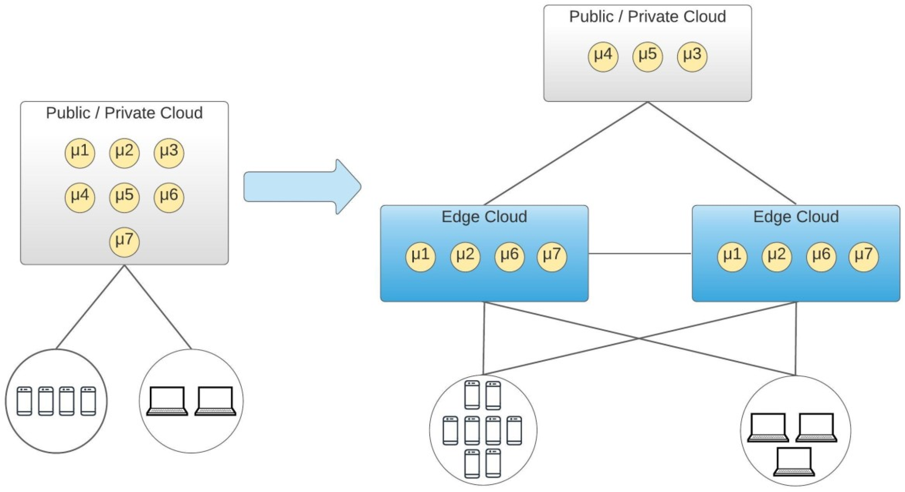

Service Mesh at the Edge
Overcoming the Complexities of Microservices. How Service Mesh and Edge Computing can Shape the Future of Enterprise Architecture

As Enterprises are under pressure to increase agility and speed to delivery, microservices and containers adoption continues to grow rapidly and faster than expected. There are many articles about the benefits of containerization, e.g. portability (write once, run anywhere), resource efficiencies and faster application start-up times. However, microservices and containers come with challenges, including operational and log aggregation challenges and difficulty to identify the root cause of performance degradation, to name a few.
Service Mesh
Thus, as the adoption of microservices and containers is rising, the Enterprises must manage and secure an increasing number of endpoints. A solution to these challenges is the Service Mesh technology. The development teams can focus on the application logic, instead of writing code to encrypt traffic, authorize clients, emit telemetry, etc., and let the Service Mesh push this logic into the network. The three main characteristics provided by a Service Mesh are:
Service Authorization. With Service Mesh we can establish access control across services – for example, we can define in a declarative way, which services are allowed to talk to service A and which services service A is allowed to talk to (e.g. prevent development services sending traffic to production services) Traffic Management. With Service Mesh, we can control the traffic between the services. For example, we can have canary deployments where Service A sends 99% of the traffic to Service B version 1 and 1% to Service B version 2, without the application knowing the difference. Traffic Telemetry. With Microservices architecture, it becomes difficult to find out where the connections break, why certain requests are failing, where the performance degradation is etc. With Service Mesh, we can collect several metrics, like latency between services, HTTP errors etc. and push these to a metrics server (e.g. Prometheus) for further analysis and investigation.
Containers at the Edge
Containers have changed the way developers package and run applications and allowed Enterprises running containerised applications virtually anywhere. At the same time, with edge computing, we can reduce latency by putting the compute resources at locations geographically closer to the end-users.
For specific low latency applications (e.g. mobile applications, online gaming, autonomous cars, multimedia streaming) where decisions must be made quickly, the containers can be few hops away, ready to accept requests, improving the end-user experience.
Also, as the amount and velocity of data increases (e.g. data produced by IoT devices), pushing these data to the cloud or a data centre for processing becomes inefficient. Enterprises need to take a more decentralized approach, and Edge computing offers near real-time insights and localized data processing.
Service Mesh at the Edge
As we are moving to a distributed architecture, the microservices and containers move from the cloud to the edge and edge native applications are emerging, the technology which manages their complexities needs to follow them. However, using Service Mesh at the edge to offload infrastructure-related activities brings new challenges.
As an example, resource constrains become a challenge. While in the Cloud, Service Mesh can scale across multiple nodes, at the edge we might have a single node for our service. Also, in data centres, we might have custom hardware to accelerate applications and networking, while at the edge we might have to use standard edge hardware. Thus, we need to ensure that we are lean on resources like compute and bandwidth.
Another area that can be challenging for Service Mesh at the edge is that the edge devices might not be physically secure. With the Service Mesh, we can secure the microservices, but at the same time, the additional layer may become a target for exploits. For example, the Service Mesh will provide some hardening at the perimeter of the application. However, if an intruder gets past the Service Mesh’s basic perimeter defence will be able to compromise the edge service.
These are exciting challenges, and we expect new design patterns to emerge.